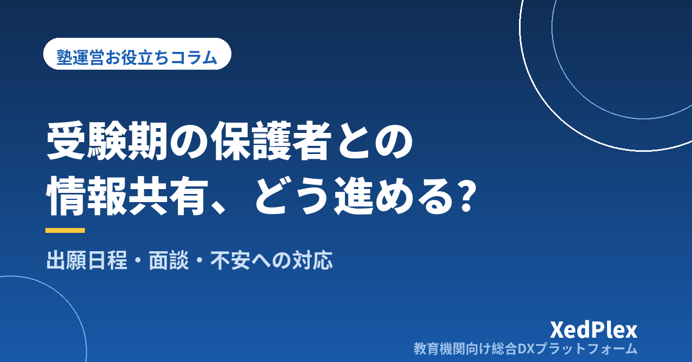

受験期の保護者との情報共有、塾はどう進める？｜出願スケジュール・面談の時期・不安への対応を型にする

秋が深まると、受験生の保護者からの連絡が目に見えて増えてきます。「志望校はこのままで大丈夫でしょうか」「併願校はいつまでに決めればいいですか」「模試の判定が下がったのですが」──。授業と講習の準備で手いっぱいの時期に、一件ずつ個別に答えていると、塾長の時間はあっという間になくなります。
一方で、保護者の側から見ると、受験期は「何が、いつまでに決まるのか」が分からないこと自体が不安の種です。連絡が増えるのは、塾への不信というより、先の見通しが共有されていないことの表れである場合が少なくありません。この記事では、受験期の保護者との情報共有を「日程」「学習状況」「判断材料」の3つに分け、出願スケジュールのまとめ方、面談の時期、不安への対応を型にする方法を整理します。
受験期の情報共有がうまくいかない3つの原因
受験期に保護者とのやりとりがこじれる場面を振り返ると、原因はおおむね次の3つに分けられます。
| 原因 | 起きること |
|---|---|
| 日程が塾長の頭の中にしかない | 出願期間や面談の予定を保護者が把握できず、「いつ決めるのか」という問い合わせが個別に届く |
| 情報が生徒経由でしか伝わらない | 受験生本人は余裕がなく、プリントや口頭の伝言が家庭に届かない。保護者は塾で何を話したか知らない |
| 連絡が「結果が悪いとき」だけになる | 模試の判定が下がったときにだけ連絡が行き、保護者は塾からの連絡そのものに身構えるようになる |
3つに共通するのは、情報の量ではなく届け方と順番が決まっていないことです。受験学年は連絡の回数を増やせばよいわけではありません。普段の連絡頻度の考え方は「塾の保護者連絡、適切な頻度は？」で整理していますが、受験期はそこに「期限のある情報」が加わる点が違います。
共有する情報を「日程・学習状況・判断材料」の3種類に分ける
受験期に保護者へ届ける情報は、性質の違う3種類に分けて考えると、届け方が決めやすくなります。
| 種類 | 内容の例 | 向いている届け方 |
|---|---|---|
| 日程 | 模試の日、面談の時期、志望校を決める目安の時期、直前期の授業・自習室の予定 | 全員に同じものを文書や一斉配信で。早めに、まとめて |
| 学習状況 | 今取り組んでいる単元、過去問の進み具合、家庭での様子として気になる点 | 生徒ごとに、決まった間隔で短く |
| 判断材料 | 模試の結果の読み方、志望校と現状の距離、併願の考え方 | 面談で、資料を見ながら対面で |
うまくいかない塾では、この3つが混ざっています。日程のような全員共通の話を面談で一人ずつ説明して時間が足りなくなったり、志望校変更のような重い話をメッセージで済ませて誤解を生んだりします。日程は一斉に、状況は定期的に、判断は面談で──この振り分けを先に決めるだけで、個別の問い合わせはかなり減らせます。
出願スケジュールは生徒ごとに1枚にまとめる
受験生が複数の学校を受ける場合、出願期間・試験日・合格発表・入学手続きの締切が学校ごとに異なり、日程が重なり合います。これを保護者が自分で整理するのは大きな負担で、塾が一覧の形を用意するだけでも喜ばれます。
スケジュール表に入れる項目
- 受験する学校・学科と、志望順位
- 出願期間と出願方法（窓口・郵送・インターネットなど）
- 出願に必要な書類と、学校に依頼が必要なもの
- 試験日・試験科目・面接の有無
- 合格発表の日と確認方法
- 入学手続きの締切
- それぞれの項目を「誰が確認するか」
大切なのは最後の項目です。出願の手続きそのものは、家庭と在籍校が進めるものです。塾が担うのは、日程の見通しを整理し、抜けがないか一緒に確認する役割だと、最初に保護者へ伝えておきましょう。役割があいまいなまま進むと、「塾が教えてくれると思っていた」という行き違いが起きます。
入試の日程・出願方法・必要書類は、年度や地域、学校によって変わります。スケジュール表に書き込む内容は、各学校の募集要項や教育委員会などの公式発表で確認し、表には「確認した日」と「確認元」を書き添えておきます。前年の情報や記憶で埋めないことが鉄則です。
表は一度作って終わりではなく、志望校が変わるたびに更新します。最新版がどれか分からなくならないよう、置き場所は1か所に決め、更新したら保護者にも同じものを渡します。学校ごとの定期テスト日程を一覧にする方法は「塾の定期テスト対策期間の運営」で紹介していますが、考え方は同じです。
面談はいつ行うか──4つの時期と、各回で決めること
受験学年の面談は、回数よりも「その回で何を決めるか」をはっきりさせることが重要です。時期は地域や受験の種類によって前後しますが、次の4つの節目を目安にすると組み立てやすくなります。
| 時期の目安 | 面談の目的 | 決めること |
|---|---|---|
| 受験学年の前半 | 方向性の確認 | 志望の方向、家庭の希望と条件（通学範囲・費用など）、夏までの学習の重点 |
| 夏の終わり〜秋 | 現状と志望校の距離を共有 | 志望校の候補、秋以降の学習計画、次に判断する時期 |
| 出願校を決める時期 | 受験校の確定 | 第一志望と併願校、出願スケジュール表の確認 |
| 直前期 | 当日までの過ごし方の確認 | 直前の学習内容、試験前後の連絡方法、結果が出たあとの動き |
在籍校でも進路の面談が行われるため、塾の面談は学校の面談の少し前に置くと、保護者が家庭の考えを整理して学校に臨めます。学校での話と塾での話が食い違ったときは、どちらが正しいかを争うのではなく、食い違いの理由を一緒に確認する姿勢が信頼につながります。
面談の時期は、年度の早い段階で「受験学年の面談は年○回、この時期に行います」と日程の情報として一斉に知らせておきます。予定が先に見えていれば、保護者は「次の面談で聞こう」と考えられるようになり、急ぎでない問い合わせが面談にまとまります。資料の準備を短時間で終える方法は「保護者面談の準備を1時間で終わらせる方法」を参考にしてください。
保護者の不安にどう対応するか
受験期の保護者の不安は、なくすことはできません。塾にできるのは、不安が大きくなりすぎる前に受け止める場所と、判断の材料を用意することです。
模試の結果は「判定」ではなく「次にやること」とセットで伝える
模試の結果が返ってくると、保護者の目は判定の記号に集まります。塾からは、判定そのものより、どの分野で点を落としたのか、次の模試までに何をするのかを添えて伝えます。事実→解釈→次の一手の順で話す型は、「塾で成績がすぐに伸びないとき、保護者にどう説明する？」で詳しく書いています。「大丈夫です」「必ず受かります」といった保証の言葉は、結果が伴わなかったときに信頼を大きく損なうため避けましょう。
連絡のルールを先に伝える
不安が強い保護者ほど、夜間や休日にも連絡を送りがちです。受験期に入る前に、次のようなルールを文書で伝えておくと、双方の負担が軽くなります。
- 相談の連絡は塾の窓口へ。講師個人の連絡先ではやりとりしない（理由は「塾の保護者連絡、講師の個人LINE頼みは危険？」で解説しています）
- 返信は翌営業日までを目安とする
- 志望校の変更など判断に関わる相談は、メッセージではなく面談の時間を取る
不安の相談を受けたときの返信例
ポイントは、気持ちを受け止める、事実を一つ伝える、次に話し合う機会を示す、の3点です。その場で結論を出そうとしないことで、保護者も落ち着いて次の面談を待てるようになります。
生徒本人と保護者で意見が違うとき
志望校をめぐって本人と保護者の考えが分かれることは珍しくありません。塾はどちらかの代弁者になるのではなく、双方の希望と現状の材料を並べて、話し合いの場を整える立場を取ります。面談で話した内容と決まったことは必ず記録に残し、次回の面談の冒頭で確認するところから始めると、話が振り出しに戻りません。
まとめ
受験期の保護者との情報共有は、連絡を増やすことではなく、情報の種類ごとに届け方を決めることから始まります。日程は全員に早めにまとめて知らせ、学習状況は決まった間隔で短く伝え、志望校などの判断は面談で資料を見ながら話す。出願スケジュールは生徒ごとに1枚にまとめ、公式の情報で確認しながら更新する。面談は4つの節目に置き、各回で決めることをはっきりさせる。不安の相談には、受け止め・事実・次の機会の3点で応える。
受験が終わったら、どの時期にどんな問い合わせが多かったか、面談で何が決まりにくかったかを短く記録しておきましょう。それが来年の受験学年に配る「年間の見通し」の土台になります。まずは今年の受験生について、面談の予定と出願スケジュール表の項目を書き出すところから始めてみてください。
この記事を書いた運営より
私たちは、個人経営・小規模の学習塾向けに、生徒管理・QRコードでの入退室記録・月次請求・保護者へのLINE/メール通知・AIによる学習支援までをひとつにまとめた教育機関向け総合DXプラットフォーム「XedPlex（ゼドプレックス）」を開発・提供しています。初期費用は0円、料金は生徒1名あたり月額300円（税込）から。生徒50名の塾なら月15,000円（税込）です。全国8つの教室で導入されており、導入塾には紹介ホームページの無料作成も行っています。機能の詳細説明はこちら。
XedPlexの詳細を見る